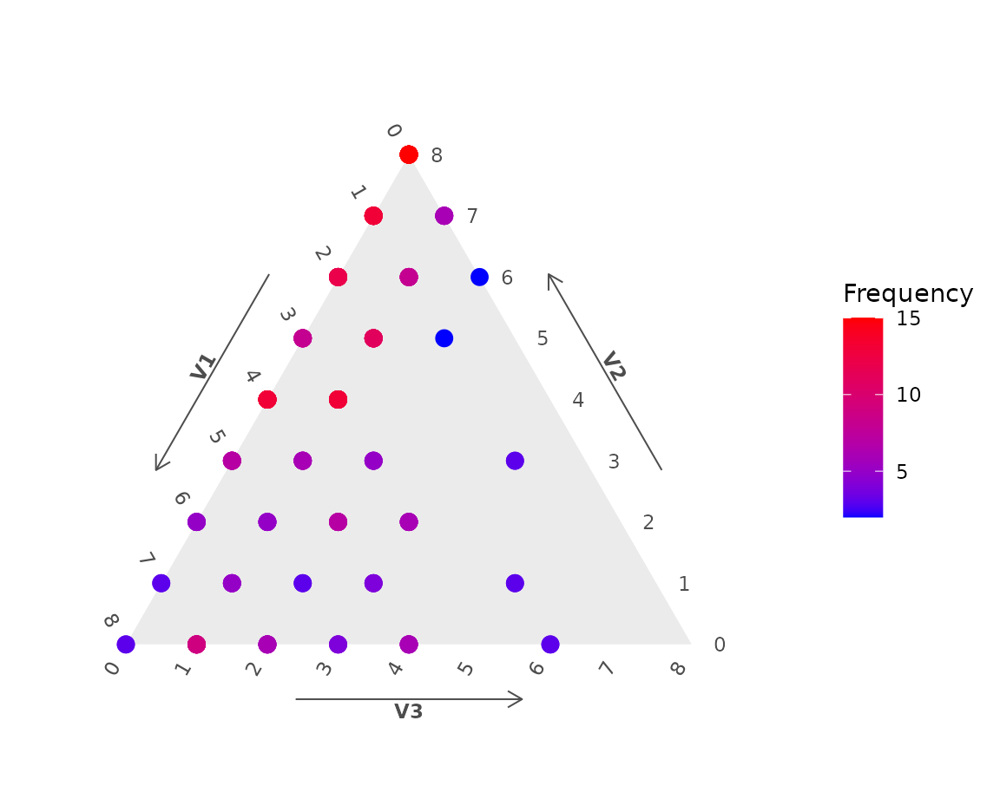
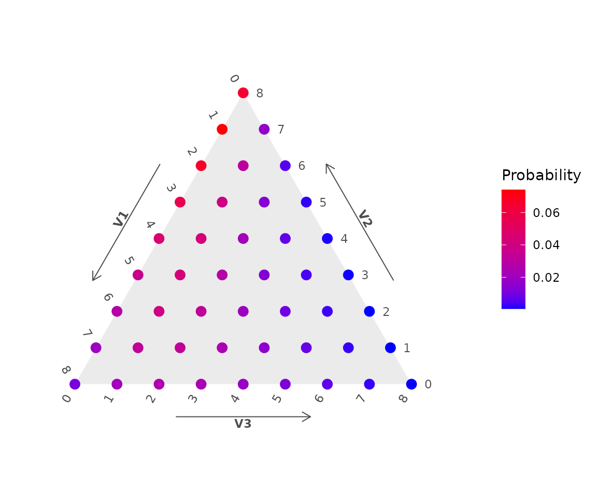
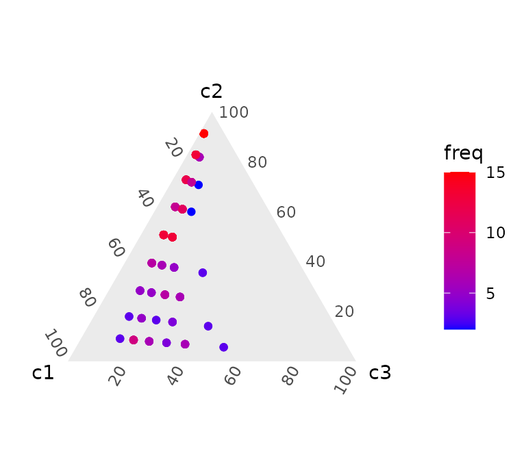
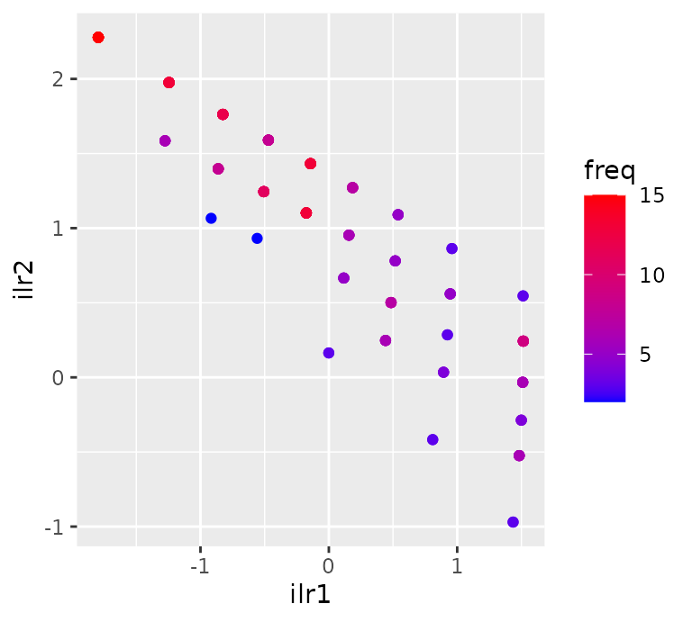

The logratio-normal-multinomial distribution
lrnm.Rmd
library(coda.count)
library(coda.base)
library(ggtern)
library(gganimate)
theme_set(theme_minimal())The logratio-normal-multinomial (LRNM) distribution is the distribution obtained from the compounding of a normal distribution defined on the Simplex using log-ratio coordinates with the multinomial distribution.
We can build a sample of a LRNM as follows:
- Firstly, for given parameters \(\mu\) and \(Sigma\) and a certain clr-basis, we generate a log-ratio normally distributed sample :
set.seed(1)
N = 200
-0.8, 1), nrow = 2)
We can visualise either the compositional sample in a Ternary diagram or their coordinates (with respect basis \(B\)).
ggtern() +
ggplot() +


- After the logratio-normal random variables are generated, they are used to generate a new sample of counts using the multinomial distribution. With the function
rmultinomial()we can generate that sample.
SIZE = 8
In coda.count we can compound this to generations using the function rlrnm():
Y = as.data.frame(sample)
To visualise the counting sample we can use a ternary diagram, but observations will only appear in discrete positions. In general, we call the \((K-D)\)-simplex lattice the sapce for the \(D\)-part count data with size \(K\).
Yc = Y[duplicated(Y),]
brks = 0:SIZE/SIZE
ggtern() +
tern.axis.title.show = F,
tern.axis.arrow.text = element_text(face = 'bold')) +
scale_color_gradient(low = 'blue', high = 'red') +
labs(col = 'Frequency')
For given parameters \(mu\) and \(\Sigma\) we can calculate the probability mass function for each element in a \((8-3)\)-simplex lattice:
X = as.data.frame(SL3)
ggtern() +
tern.axis.title.show = F,
tern.axis.arrow.text = element_text(face = 'bold')) +
scale_color_gradient(low = 'blue', high = 'red') +
labs(col = 'Probability')
For the sample Y we can
Expected estimated posterior probabilities
P_exp = P_exp[duplicated(P_exp),]
H_exp$freq = P_exp$freq
ggtern() +
scale_color_gradient(low = 'blue', high = 'red')
ggplot() +
scale_color_gradient(low = 'blue', high = 'red')
ellipse = function(mu, sigma, p){
as.data.frame(t(a))
}
composition(ellipse(mu, sigma, p), B)
}
# We calculate the posterior probabilities for each multivariate count
lM = lrnm_posterior_approx(SL3, mu, sigma, B)
MAX = composition(H_MAX, B)
H_E = as.data.frame(t(c_obtain_moments_lrnm_hermite(SL3, mu, sigma, ilr_basis(3), order = 10)[[1]]))
E = composition(H_E, B)
mu_center = composition(mu, B)df_ellip0 = coda_ellipse(mu, sigma, 0.95)
y = mu_center[2],
z = mu_center[3]), col = 'blue') +
df_ellip = coda_ellipse(lM[[i]]$mu, lM[[i]]$sigma, 0.95)
df_ellip$state = i
p = p +
geom_path(data = df_ellip,
}
pdf_ellip0 = ellipse(mu, sigma, 0.95)
df_ellip = ellipse(lM[[i]]$mu, lM[[i]]$sigma, 0.95)
p = p +
geom_path(data = df_ellip,
}
p + coord_equal()